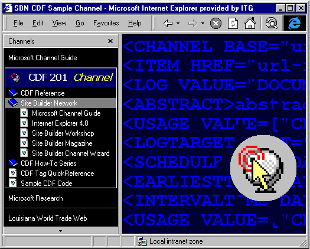
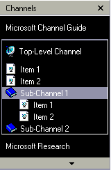
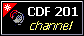
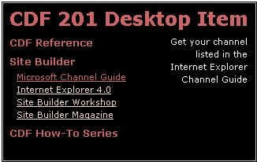
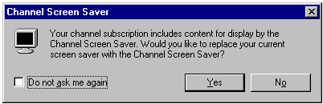
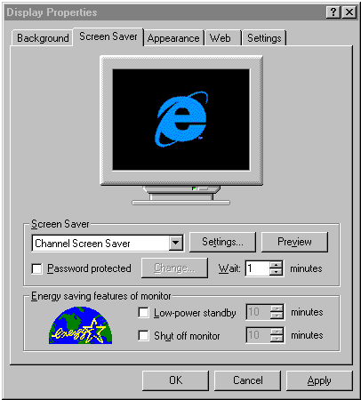
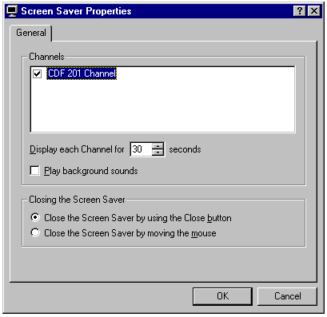
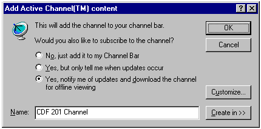
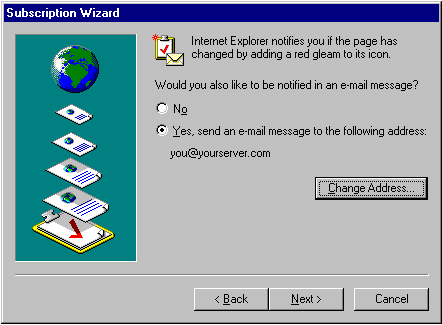
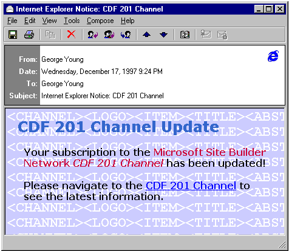

|
| ||
|
| ||
George Young
Microsoft Corporation
January 16, 1998
Contents
Introduction
Creating a Multi-Level Channel
Setting Scheduling and Crawling Options
Scheduling
Crawling
Specifying Additional Usages
Desktop Items
Screen Savers
HTML E-Mail
Pre-Caching
Tracking User Page Hits
Conclusion
Additional Information
In this article, we follow up the basics introduced in CDF 101 by creating a more complex Microsoft® Internet Explorer Active Channel™. We'll create a multi-level channel, set scheduling and crawling options, log user activity, and extend Webcasting offerings with screen savers, Desktop items, and HTML e-mail. If you have not read my CDF 101 article, you may want to do so before continuing.
I've incorporated this article, as well as its predecessor and a number of additional CDF resources (including sample CDF source code) in a CDF 201 channel written to accompany the article. If you are running Internet Explorer 4.0, you can subscribe to the CDF 201 channel by clicking the Add Channel graphic below:
The CDF 201 channel is also the source of most of the examples in this article. Here is what the channel looks like with the default page opened:

Figure 1. The CDF 201 sample channel
One significant benefit of offering an Active Channel to your users is the ability to set a specific hierarchy of topics and content. Using a multi-level channel, you can organize a subset of your site's existing content according to any criteria you desire, independent of the original Web site's structure.
To create multiple levels within your channel, place <CHANNEL> tags (sub-channels) within the main <CHANNEL> tag, and place the items for these sub-channels within the opening and closing sub-channel tags, as indicated in the outline below.
CHANNEL
ITEM
ITEM
CHANNEL
ITEM
ITEM
CHANNEL
ITEM
ITEM
ITEM
|
 |
Figure 2. Channel outline in Channel Pane
As indicated in Figure 2, the CDF file identified by the outline above would have two second-level folders, or sub-channels. The first sub-channel (expanded above) contains two items, and the second (not expanded) contains three items. Top-level items appear as they are positioned in the CDF file -- in this case, above the sub-channels.
Unlike the top-level channel, sub-channels containing items do not require an associated page (the HREF attribute). Not specifying an associated page results in one of the following display options:
If you specify an HREF for the sub-channel, that page loads in the browser window when the user clicks the sub-channel folder.
Sub-channel folders appear with a default "book" graphic. You can specify any graphic to appear in place of the default folder image by identifying it as "icon" style in the <LOGO> tag for the sub-channel, as follows:
<LOGO href="http://yourdomain.com/images/anyimage.gif" STYLE="icon" />
You can also change the default "page" icon for individual items in the same manner, placing the <LOGO> tag within the <ITEM> element for which you want to change the icon.
One of the interesting features of Internet Explorer channels is that the channel content can be automatically updated on the user's machine. This ensures that the user has the latest information from your site and allows the user to read this information "offline," that is, when not connected to the Internet.
You can specify when Internet Explorer channels should update themselves by setting scheduling options in the CDF file. You can also set crawling options to specify whether your channel content is downloaded to the user's machine or is merely checked for updates.
As a channel developer, you can set the frequency and time at which channel updates occur. This is specified in the CDF file using the <SCHEDULE> tag, as follows:
<SCHEDULE STARTDATE="1997-08-01"> <INTERVALTIME DAY="7" /> <EARLIESTTIME HOUR="0" /> <LATESTTIME HOUR="12" /> </SCHEDULE>
Here we have specified that Internet Explorer should update the channel on a weekly basis, any time between midnight and 12 noon, beginning August 1, 1997.
<LATESTTIME> is an important element. If you omit it, all users will have their channels updated at exactly the same local time, which may result in server load problems if you have a very heavy channel and many users. With <LATESTTIME>, you can set an interval (LATESTTIME minus EARLIESTTIME) over which channels will be updated at random, thus reducing server load.
By default, the schedule uses local time (the user's time zone). To force updates to occur at an absolute time, such as 2:00 A.M. server time, use the optional TIMEZONE attribute of the <SCHEDULE> element, as follows:
<SCHEDULE STARTDATE="1997-12-10" TIMEZONE="-0700">
TIMEZONE is expressed relative to Greenwich Mean Time (GMT).
The <SCHEDULE> element must be placed within the top-level channel. All channel items are updated at the same date and time according to this schedule. Only one schedule may be specified in a CDF file.
LAN-connected users will automatically adhere to this "AutoSchedule". Dial-up users will need to update their channels manually or create a custom schedule in the Channel Properties dialog box when they subscribe to a channel.
Once an update has taken place, if the CDF file has changed, the channel icon in the Channel Bar will "gleam" (as shown in the upper-left corner in Figure 3 below).

Figure 3. Update "gleam" on the Channel Bar icon
Note that a gleam is triggered only by a detected change in the CDF file itself, not by a change in the channel content. If you want to trigger a gleam when your content changes, you'll need to modify the CDF file as well, even if this means just adding a blank space somewhere and saving the file on the server.
The gleam is one of two methods that Internet Explorer uses to notify channel subscribers that the CDF file has changed. The second method is an optional e-mail notification that the user must explicitly request using the Channel Properties dialog box, either at the time of subscription or later on. If selected, this option causes Internet Explorer to send an e-mail to the user indicating that the channel has been updated and that a change in the CDF file has been detected. You can also specify that a Web page (see HTML E-mail below) be sent to Outlook Express users in place of the default e-mail message.
Internet Explorer can go out and check Web pages during updates. This process is called crawling. Crawling options specify the number of link levels ("depth" of the channel) Internet Explorer should crawl and whether it should pre-cache the pages it finds while crawling.
The depth of the crawl is specified via the LEVEL attribute of the <CHANNEL> and <ITEM> elements. A LEVEL value of "0" (the default) indicates that Internet Explorer should only visit the page defined by the channel or item HREF. A value of "1" tells Internet Explorer to crawl to the HREF page and to all pages that HREF page links to, and so forth.
Working in conjunction with LEVEL, the PRECACHE attribute of the <ITEM> element specifies whether to download and pre-cache the item's page. Its two possible values are "Yes" (the default), and "No". Setting PRECACHE to "No" for a given item causes Internet Explorer to ignore the LEVEL attribute for that Item; this is especially recommended for large documents in your channel.
<ITEM href="http://www.microsoft.com/workshop/delivery/channel/cdf2/cdf201sc.htm" PRECACHE="yes" LEVEL="0"> <ABSTRACT>Source code for the Site Builder CDF channel.</ABSTRACT> <TITLE>Sample CDF Code</TITLE> </ITEM>
In the code above, we tell Internet Explorer to pre-cache the page cdf201sc.htm (PRECACHE="yes"), and to load only this page, that is, not to follow any links from the page (LEVEL="0").
The CDF file includes four additional options that developers can specify via the <USAGE> child element to provide the user with a more complete experience: Desktop item, e-mail, screen saver, and pre-caching.
The Active Desktop offers an interesting information delivery alternative to content developers. You can easily add a Desktop item (formerly called Desktop Component) as part of your Webcasting offerings, putting your name and information on the subscriber's Windows Desktop.
Unlike the other channel items discussed below, a Desktop item requires a separate CDF file. Its <USAGE> element takes a number of child elements specific to Desktop items, including OPENAS, HEIGHT, WIDTH, and CANRESIZE. The OPENAS value may be either "HTML" (the default) or "Image". HEIGHT and WIDTH specify the dimensions of the item on the Active Desktop. The <CANRESIZE> element is used to specify whether the user may resize the Desktop item once it's loaded on the Active Desktop.
Desktop item CDF files may also take a <SCHEDULE> element (see above) to specify automated updating, and a <TITLE> element, which is displayed in the Web tab of the Desktop Properties dialog box and in the Favorites | Subscriptions window.
Here is the code for the sample CDF 201 Desktop item developed for this article:
<?XML version="1.0"?>
<CHANNEL>
<SCHEDULE STARTDATE="1997-08-01">
<INTERVALTIME DAY="7" />
<EARLIESTTIME HOUR="0" />
<LATESTTIME HOUR="5" />
</SCHEDULE>
<ITEM
href="http://www.microsoft.com/workshop/delivery/channel/cdf2/cdf201di.htm"
PRECACHE="YES">
<TITLE>CDF Desktop Item</TITLE>
<USAGE VALUE="DesktopComponent">
<OPENAS VALUE="HTML" />
<HEIGHT VALUE="200" />
<WIDTH VALUE="320" />
<CANRESIZE VALUE="NO" />
</USAGE>
</ITEM>
</CHANNEL>
As with channels, the HREF of the top-level item specifies the content page to be displayed, in this case, on the user's Active Desktop.

Figure 4. The CDF 201 sample Desktop item
Desktop item subscriptions are activated in the same manner as channels, and present users with a Subscription Wizard dialog box similar to that used for channels. We recommend using the graphic below to provide a link to your Desktop item CDF file. You may click on it to subscribe to the CDF 201 Desktop item I've created as a sample for this article.
Note: To use the Add to Active Desktop and Add Active Channel buttons used in this article, you need to accept the terms of use. Please see Microsoft Internet Explorer Logo Programs.
Internet Explorer allows HTML pages (in addition to the old .scr format) to be displayed on the subscriber's computer as screen savers. The developer identifies an HTML page as a screen saver in the CDF by specifying an item with a <USAGE> value of "ScreenSaver", as follows:
<ITEM href="http://www.microsoft.com/workshop/delivery/channel/cdf2/cdf201ss.htm" PRECACHE="yes"> <USAGE VALUE="ScreenSaver"></USAGE> </ITEM>
The screen saver item must be placed in the top-level <CHANNEL>.
If the user does not have the Channel Screen Saver set as the system screen saver (see Figure 6 further below), the channel will present a dialog box at the time of subscription, providing a choice between the Channel Screen Saver and the existing (non-channel) screen saver.

Figure 5. The Channel Screen Saver dialog box
If the user opts for the Channel Screen Saver mode, Internet Explorer will rotate through all screen savers provided by the user's channels. The subscriber can control this behavior via the Screen Saver Properties property sheet, which is accessed via the Settings button of the Screen Saver tab of the Display Properties property sheet.

Figure 6. The Display Properties property sheet

Figure 7. The Screen Saver Properties property sheet
An HTML page used as a Screen Saver may contain any content and objects that a "normal" page designed for Internet Explorer 4.0 may contain, including Dynamic HTML and clickable links.
Users also have the option of receiving e-mail notification of channel updates (as we discussed earlier). The channel developer determines the form of this e-mail, while the user chooses whether or not to receive e-mail notification.
The user may override the default "no e-mail" option by launching the Subscription Wizard at the time of subscription, accessed by clicking the Customize button on the Add Active Channel content dialog box, which appears every time the user subscribes to a channel.

Figure 8. The Add Active Channel content dialog box
Once in the Wizard, the user determines whether or not to receive e-mail notification.

Figure 9. The Subscripton Wizard e-mail notification pane
By default, Internet Explorer will send a link to the main top-level channel page as HTML mail. If the subscriber is using the Outlook Express e-mail client, which ships with Internet Explorer 4.0, the page will load in the e-mail message. You can override this default by specifying another HTML document as an e-mail item. Like the screen saver item, an e-mail item must be specified in the top-level channel, as follows.
<ITEM href="http://www.microsoft.com/workshop/delivery/channel/cdf2/cdf201em.htm"> <USAGE VALUE="Email"></USAGE> </ITEM>
This option is especially useful if your main page is more decorative than functional (as is the case for the CDF 201 channel), or if you want to provide different information than what is on your channel's main page. This is what the CDF 201 sample e-mail item looks like:

Figure 10. The CDF 201 E-mail Item
As mentioned above, the user must explicitly choose the e-mail notification option from the Subscription Wizard when subscribing to the channel. If you plan to use this option for your channel, you might want to encourage users on your subscription page (which offers the link to the CDF file) to select this option.
USAGE VALUE="None" allows the developer to specify items in addition to HTML pages and images to be downloaded to the user's cache. These items are thus pre-cached and made available offline. For example, you may pre-cache sound files by specifying:
<ITEM href="http://yourdomain.com/sound.wav">
<USAGE VALUE="NONE"></USAGE>
</ITEM>
You may also pre-cache multiple items by setting a sub-channel's <USAGE> to none, and then specifying child items for it, as follows:
<CHANNEL>
<USAGE VALUE="NONE">
<ITEM href=http://yourdomain.com/sound1.wav PRECACHE="Yes">
<ITEM href=http://yourdomain.com/sound2.wav PRECACHE="Yes">
<ITEM href=http://yourdomain.com/sound3.wav PRECACHE="Yes">
</USAGE>
</CHANNEL>
If you have come to rely on access logs to track user activity and resource demand, you will be happy to find out that the CDF format provides a mechanism for tracking hits to individual channel pages, even when they're viewed offline. User viewing of channel pages may be logged using the W3C standard Extended Log File Format. The log file is initially stored on the user's machine and is later posted to the server during channel updates.
Two tags are required to enable page-hit logging: <LOGTARGET> and <LOG>.
The <LOGTARGET> tag, which must be located in the top-level <CHANNEL> element, specifies where to put the logged information. Its HREF attribute specifies the directory to which the log file is to be posted; METHOD specifies the method of transmission (currently only POST is supported); and SCOPE specifies whether OFFLINE, ONLINE, or ALL page views are to be logged.
<LOGTARGET href="http://yourdomain.com/cdflogs/logem.pl"
METHOD="POST" SCOPE="ALL">
<PURGETIME=HOUR="12" />
</LOGTARGET>
Each individual <ITEM> to be logged must be marked as such with a <LOG> child element. Currently, only "DOCUMENT:VIEW" is supported as loggable user activity.
<LOG VALUE="DOCUMENT:VIEW" />
This causes an entry to be made in the log file every time the page is viewed.
Log files may be processed in a number of ways, including Perl scripts and the ISAPI DLL (for IIS users). See Page Hit Logging for more information. The log file is uploaded to the server, so you may wish to exercise some restraint when identifying <ITEM>s to be logged.
Active Channel content delivered using Internet Explorer 4.0 can make your site more attractive to users and take your information delivery to a whole new level. Using CDF, you can create a complex hierarchical channel through which users can navigate with relative ease. You can create a Desktop item that makes your information easily available to the user, supplementing this with a screen saver.
Perhaps best of all, you can use all the great Dynamic HTML features of Internet Explorer in your channel, Desktop item, screen saver, and even in your e-mail notification.
Happy channeling!
Most of the information below is referenced in the CDF 201 channel. If you haven't yet subscribed, you may do so by clicking the link in the Introduction to this article.
You can find a full listing of all CDF tags in the CDF Reference. For an overview of Webcasting and creating channels, see Creating Active Channels. For details on creating an Active Deskop item, see Creating Active Desktop Items. The Web Workshop also has a pretty extensive FAQ about channels and CDF.
The Internet Explorer 4.0 site has additional information about Webcasting and Active Channel technology, including samples  and information about the Active Desktop
and information about the Active Desktop  . A Webcasting white paper and Active Channel Partners press release are available in the Press section
. A Webcasting white paper and Active Channel Partners press release are available in the Press section  .
.
A number of good tools are available to automate the creation of CDF files. FrontPage 98  has an excellent wizard for channel creation. The Microsoft CDF Generator is available as a free download to MSDN Online members (see the MSDN Online Tools site). For creating simple channels, see the Channel Wizard.
has an excellent wizard for channel creation. The Microsoft CDF Generator is available as a free download to MSDN Online members (see the MSDN Online Tools site). For creating simple channels, see the Channel Wizard.
Did you find this material useful? Gripes? Compliments? Suggestions for other articles? Write us!
© 1999 Microsoft Corporation. All rights reserved. Terms of use.